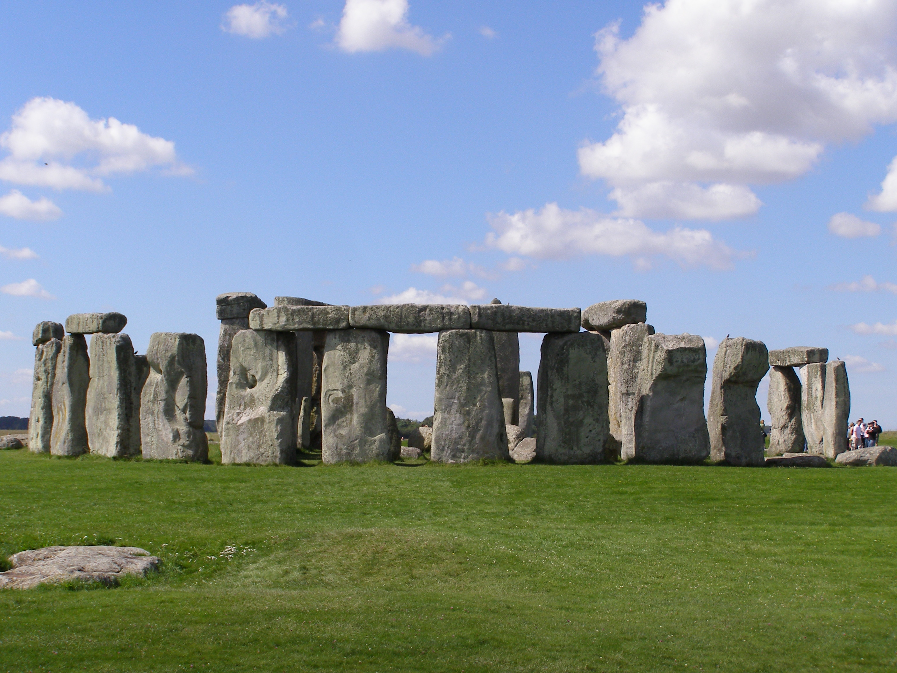
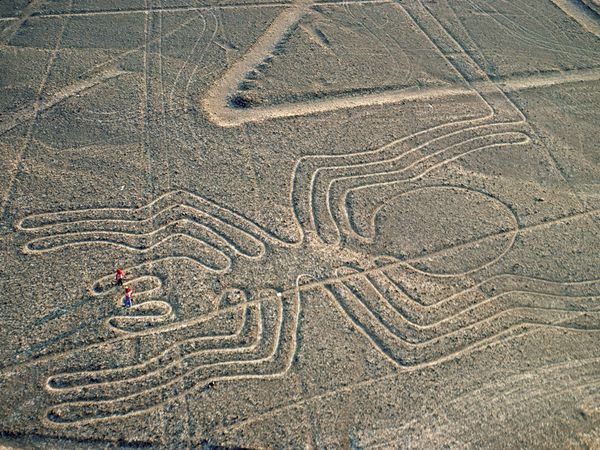
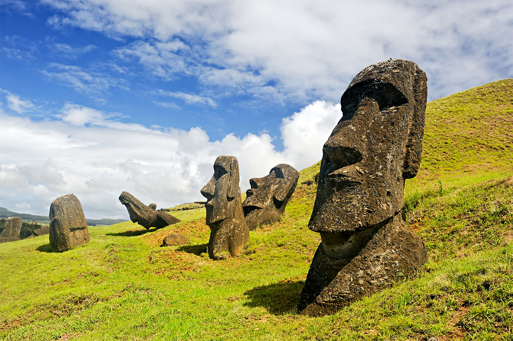
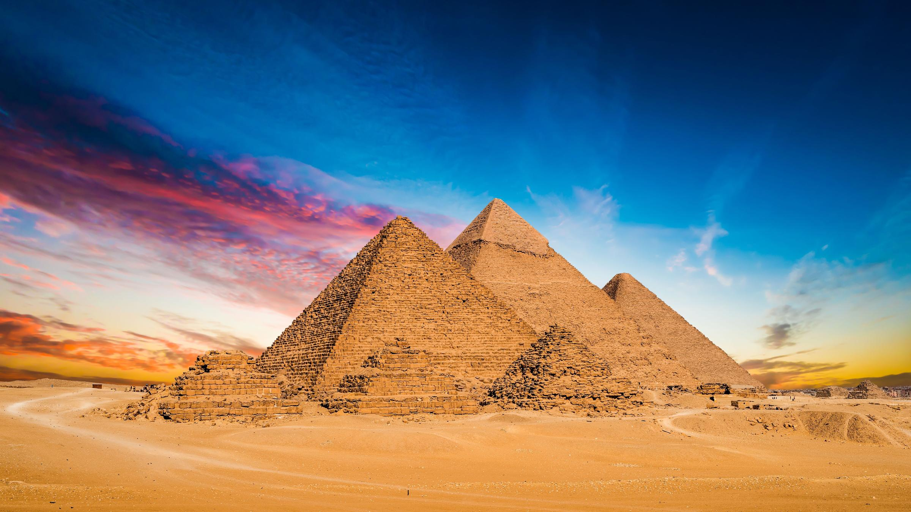

Добро пожаловать в мир загадок!
Наша планета полна мест, которые бросают вызов науке и нашему пониманию мира. От древних сооружений с неизвестным назначением до природных феноменов, которые невозможно объяснить - эти места продолжают интриговать исследователей и путешественников.
Топ-5 самых загадочных мест мира
-
Стоунхендж, Великобритания
Древнее каменное сооружение, назначение которого до сих пор остается загадкой. Возраст - около 5000 лет.
-
Линии Наски, Перу
Гигантские геоглифы, которые можно увидеть только с воздуха. Созданы между 500 г. до н.э. и 500 г. н.э.
-
Остров Пасхи, Чили
Таинственные каменные статуи моаи, созданные древней цивилизацией Рапа-Нуи.
-
Бермудский треугольник
Область в Атлантическом океане, где бесследно исчезают корабли и самолеты.
-
Пирамиды Гизы, Египет
Древние сооружения с удивительной точностью построения, технологии создания которых до сих пор обсуждаются.
Галерея загадочных мест




Сравнение загадочных мест
| Место | Страна | Возраст (лет) | Основная загадка | Изображение |
|---|---|---|---|---|
| Стоунхендж | Великобритания | 5000 | Назначение и метод строительства | Подробнее |
| Линии Наски | Перу | 2500 | Цель создания гигантских геоглифов | Подробнее |
| Остров Пасхи | Чили | 800 | Перемещение гигантских статуй | Подробнее |
| Пирамиды Гизы | Египет | 4500 | Технологии строительства | Подробнее |